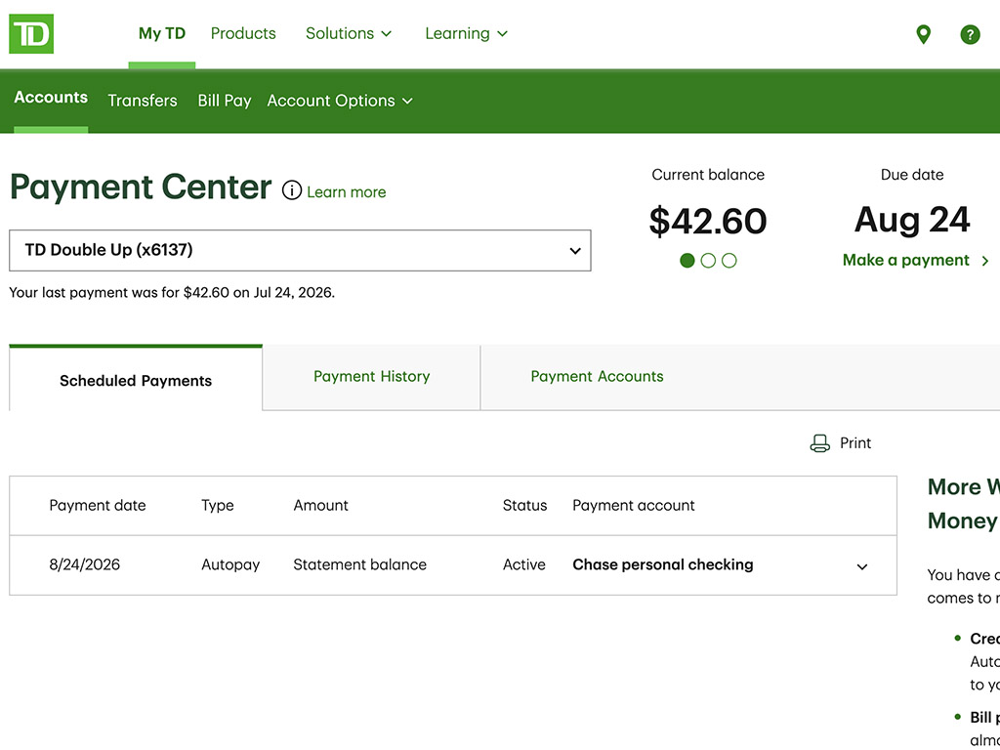
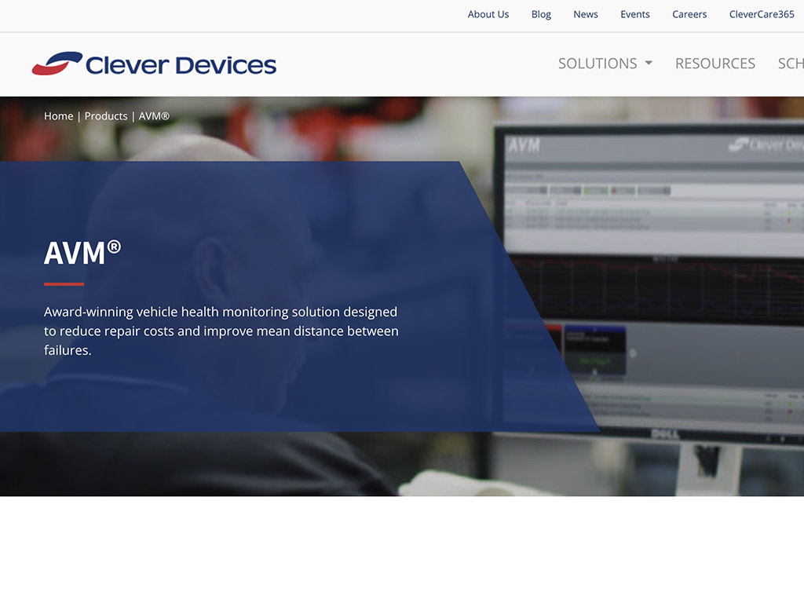
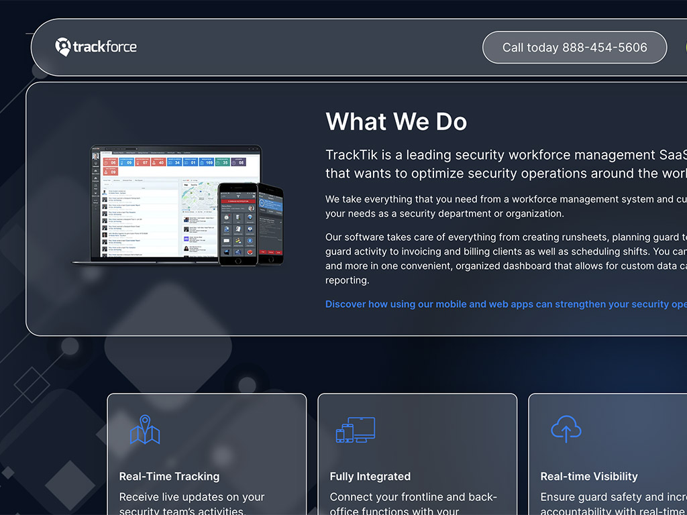
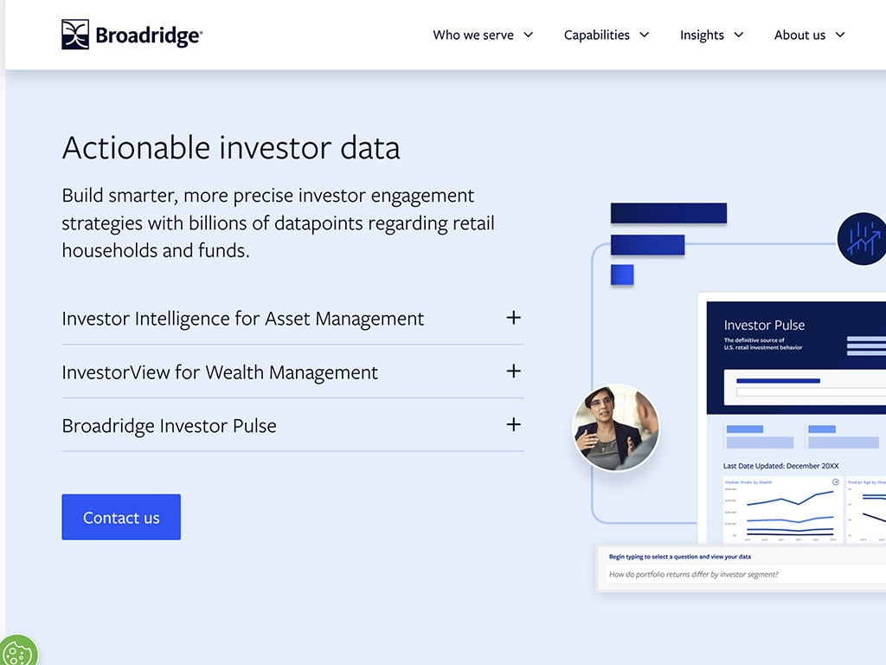
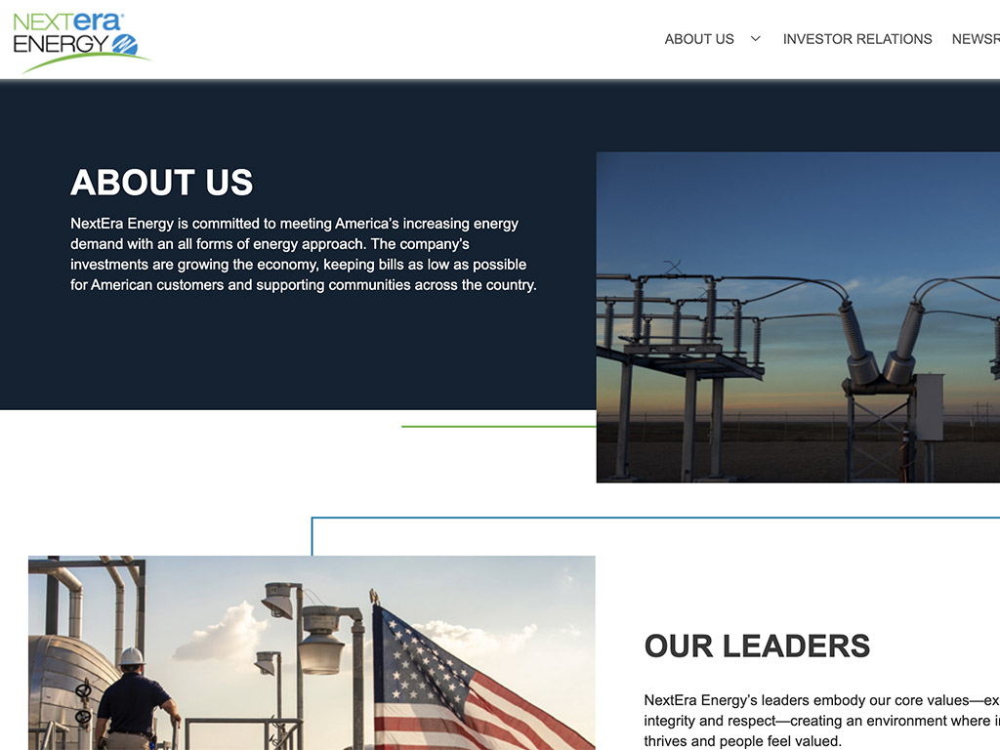
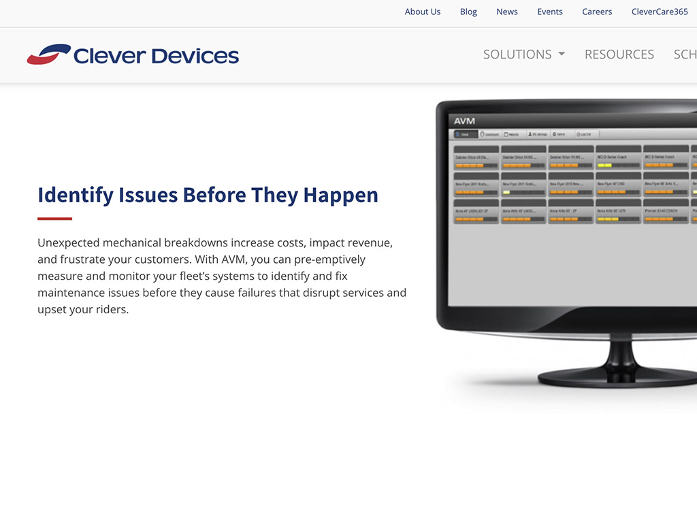
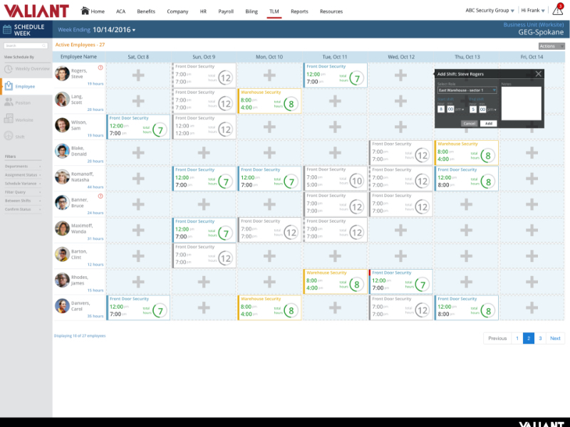
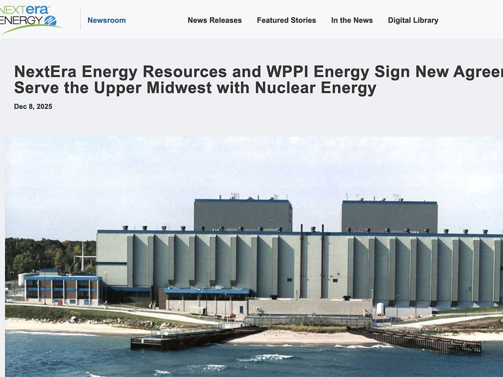

Process Case Study
A Brand Refresh, Backed by Research
A complete six-stage process — competitive research through a UX validation plan — documented end-to-end, with AI's role called out at every stage.
Read Case Study →Versatile UX/UI design leader with proven success driving the creative vision, research, and end-to-end delivery of human-centered customer experiences across banking, transit, HR tech and fintech — now integrating AI throughout research, ideation and validation to move from insight to interface faster, without cutting corners on craft.





Collaborate with product, engineering, and development teams to simplify complex workflows and align best practices with larger business goals, delivering intuitive, practical solutions to real-world problems.
"... shaped by years of hands-on practice in user research, interaction design, content design, and design systems — most recently extended by working AI directly into research synthesis, concept generation and prototyping"
Every engagement runs through the same six stages, whether the deliverable is an enterprise banking feature or a brand refresh. AI tools sit inside each stage to speed up synthesis and iteration — the judgment, the research craft, and the validation with real users stay firmly human.
Research, competitive audits and stakeholder input synthesized fast with AI-assisted analysis — more time spent interpreting findings, less time collecting them.
Problem statements stress-tested against the evidence, not assumptions. AI as a sounding board; judgment as the filter.
Multiple information-architecture and content-structure options drafted and compared quickly before committing to a site map or feature scope.
Low-fidelity wireframes and user flows generated fast, then hand-refined against real content, edge cases and interaction logic.
Several high-fidelity directions turned around quickly for stakeholder review, wired into clickable prototypes for real navigation testing.
Structured usability testing — moderated and unmoderated — with clear success metrics, and AI-assisted synthesis of what participants actually said.
A closer look at four enterprise projects — plus one process case study showing how AI fits into the work above.
A complete six-stage process — competitive research through a UX validation plan — documented end-to-end, with AI's role called out at every stage.
Read Case Study →Designed a full-featured credit card payment center — balance and minimum payments, autopay, and scheduled payments — replacing a single-option balance transfer flow.
Read Case Study →Led UI/UX for a first-of-its-kind, multi-tenant SSO portal unifying Broadridge's Bank & Broker applications into one consistent experience — over a year in the making.
Read Case Study →Fifteen-plus years spent moving between regulated, high-complexity industries — the constant is a user-centered process that adapts to each domain's constraints.
Designing interfaces and experiences for consumer banking products, keeping browser and native mobile platforms closely aligned.

Designing across native desktop, web and mobile transit products; built out the UX research practice and design pattern library from scratch.

Wireframes and prototypes for a Time & Labor Management platform, defining scheduling patterns reused across the SaaS suite.
Set UI/UX direction across tax, transfer agency, shareholder, proxy voting and shared-data-services applications, legacy and new.

Guided end-to-end redesign of internal nuclear power plant maintenance applications and a cross-tool single sign-on platform.
Years across regulated, high-complexity industries.
"He consistently displayed exceptional talent as a Visual Designer, demonstrating a remarkable ability to think like a customer and champion human-centered design principles. Frank was instrumental in translating complex feature concepts into intuitive and visually engaging designs."
"Frank's focus on user centered design, strong advocacy for incorporating user research throughout the design process, and attention to detail contributed to a successful revamp of multiple products. As a manager, Frank does a great job creating a supportive, innovative environment."
"Frank is a fantastic UX/UI designer who ensures he completely understands the entire user "story," then translates those needs into a design any company would be proud to put into production. It is his caring and dedication that set him apart."
"Frank is a consummate professional from a technical, business and relationship perspective. He always managed his workload, set expectations with customers, and was a great teammate — a pleasure to work with and an asset to any organization."
"Frank brings a rare combination of strategic thinking, design precision, and empathy — distilling complex workflows into clean, accessible experiences. His leadership in responsive design and accessibility has had a lasting impact on our customer experiences."
"I've worked with Frank for over 15 years across dozens of projects. He's one of the best UI/UX architects I've worked with in my 25-year career — elegant, clean designs for complex workflows, and prototyping skills second to none."
Download the current résumé, or connect on LinkedIn to talk about a project.